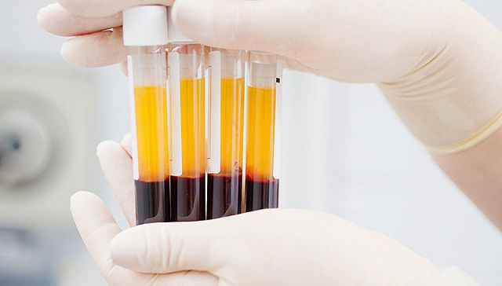

呼吁康复期患者捐血浆用于治疗？清华药学院院长：不大可能大规模推开
原文链接 备份链接 大范围推广仍需进一步临床试验的评估2月13日晚，在湖北省新冠疫情新闻发布会上，武汉市金银潭医院院长张定宇表示，康复后的患者体内有大量的中和抗体来抵抗新冠病毒。他呼吁康复期患者捐献血浆，共同拯救还在与病魔作斗争的病 …
记者：谢欣 编辑：许悦
“
武汉金银潭医院院长张定宇对外表示，金银潭医院正在开展康复病人的恢复期血浆输注，目前也显示出一些初步效果，因为康复期患者体内有大量综合抗体来对抗病毒。
”
2月13日晚，武汉金银潭医院院长张定宇对外表示，金银潭医院正在开展康复病人的恢复期血浆输注，目前也显示出一些初步效果，因为康复期患者体内有大量综合抗体来对抗病毒。
这也是新冠肺炎疫情爆发以来，首次有一线医疗专家确认了“血清疗法”用于临床救治。
实际上，在国家卫健委发布试行第四版的《新型冠状病毒感染的肺炎诊疗方案》中就已经正式提出，对重型、危重型病人治疗措施“可采用恢复期血浆治疗”。
使用康复期患者的血浆输注进行临床治疗的思路，在抗击SARS疫情时期实际上就已有之。
钟南山院士就曾在当时提出过用康复者血清治疗SARS患者的建议，天坛生物也曾研制SARS抗病毒血清。中国香港和台湾地区的一些医院也曾对SARS重病患开展过血清疗法，并取得了不错的疗效。
在疫情爆发后医药界苦苦寻找治疗新冠病毒肺炎药物时，就有多位行业专家曾对界面新闻记者提出，使用康复期患者的血浆输注治疗是一个选择。
简单来说，目前对于新冠病毒肺炎没有特效药，而患者在被病毒感染后，自身免疫系统会针对新冠病毒出现免疫应答，产生相应的特异性抗体，当这些新冠病毒特异性抗体具备足够规模时，就有可能战胜体内的新冠病毒。
而康复患者体内血液中往往就存在着足够规模的新冠病毒特异性抗体，通过对他们的血液抽取，对其血清进行一定的处理，便可以通过输血的方式把康复者血液中的抗体给到临床病人，帮助患者自身免疫系统对抗新冠病毒。
大众所关切的疫苗，实际上以传统的灭活疫苗为例，也是将被杀死病毒以疫苗方式接种人体，随后由免疫系统产生相应抗体，相比之下使用康复患者的血清治疗则更加直接。
“中国生物”也在2月13日晚宣布，已完成对部分康复者血浆的采集工作，开展新冠病毒特免血浆制品和特免球蛋白的制备。经过严格的血液生物安全性检测，病毒灭活，抗病毒活性检测等，已成功制备出用于临床治疗的特免血浆。
2月8日，以新型冠状病毒感染的肺炎诊疗方案（试行第五版）为指南，首期在江夏区第一人民医院开展了3名危重患者的新冠特免血浆治疗，目前连同后续医院治疗的危重病人超过了10人。临床反映，患者接受治疗12至24小时后，实验室检测主要炎症指标明显下降，淋巴细胞比例上升，血氧饱和度、病毒载量等重点指标全面向好，临床体征和症状明显好转。
但这种方式也并非万能神药，目前依然存在着诸多限制。
腾盛博药的联合创始人、总裁兼首席执行官洪志博士此前曾在接受医药魔方采访时表示，利用痊愈患者的血清来治疗其他感染患者是过去对抗多种感染性疾病的常见手段，但这类方法也存在一些危险，比如不同痊愈患者血清抗体量不一致，经过灭活的血清中仍含有其它一些潜在危险病源。
中科院上海巴斯德所此前也对媒体表示，虽然血清疗法可以较为有效的用来对抗或预防病毒或细菌引起的疾病，但血清成分复杂，对于是否会引起其他问题还存在不确定性，何况其存在的时间比较短，而且需要的血清数量也比较大。但是通过现代方法，可以通过分析治愈者的血液，拿到可以有效地中和病毒的全人源单克隆抗体序列，用以治疗和预防病毒引起的疾病的发生。
洪志也曾提及，现在技术上已经有了利用痊愈患者血液的更好手段，即从患者血液中提取出对病毒有记忆的B细胞，再把这类细胞产生的能够对抗病原体的抗体分离出来，进而用于治疗其他感染患者。
与直接用血清治疗相比，这是相对更安全的一种策略，因为可以对抗体进行标准化生产，还能够以标准化的剂量给药。但他也强调，拿到单抗并不意味着可以直接用于治疗其他患者，因为还要进行临床前以及临床I期健康人研究等验证。而想要大量生产这类抗体，也还需花很多时间和精力。一般来说，从发现这种抗体到使这类抗体能够在高产细胞中大量表达至少需要1年左右的时间。这对于应对突发性的疫情是非常不利的。

原文链接 备份链接 大范围推广仍需进一步临床试验的评估2月13日晚，在湖北省新冠疫情新闻发布会上，武汉市金银潭医院院长张定宇表示，康复后的患者体内有大量的中和抗体来抵抗新冠病毒。他呼吁康复期患者捐献血浆，共同拯救还在与病魔作斗争的病 …
原文链接 备份链接 2 月 13 日晚间，国药中国生物宣布了一项重要进展，在新冠肺炎康复者血浆中已检测出高效价病毒中和抗体，实验证明，能够有效杀死新冠病毒，“我们用康复者特异血浆临床治疗 11 例危重病人，治疗效果显著。” 中国生物官方宣 …
原文链接 备份链接 湖北省新冠肺炎疫情防控指挥部13日21时召开新闻发布会，邀请中央指导组医疗救治组专家、北京朝阳医院副院长童朝晖、广州支援武汉协和医院医疗队队长、广州医科大学附属第一医院副院长张挪富、武汉金银潭医院院长张定宇等介绍武汉 …
原文链接 备份链接 英国“三号患者”史蒂夫·沃尔什 图片来源：Servomex 记者：潘金花 “ 周二，英国疑似“超级传播者”沃尔什发表声明说，自己已经完全康复。他感谢了朋友、家人与同事，也希望媒体能够尊重他们的隐私。 ” 上周四，英国确 …
原文链接 备份链接 【财新网】（记者 邸宁）新冠疫情防控进入关键时期，重症病例不断增加，降低病死率，除了对重症患者进行支持救治，预防轻症患者疾病进展同样重要。 根据国家卫健委官方数据，截至2月9日24时，新冠病毒新增确诊病例3062 …